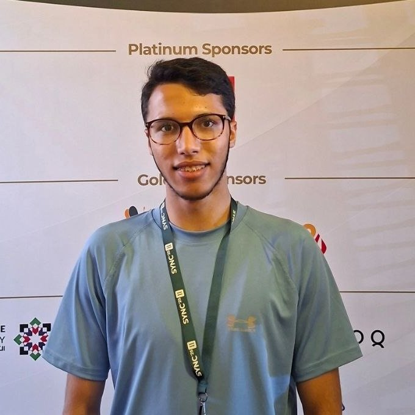

omar-borhom.vercel.app
Omar Borhom
Backend-Focused Full-Stack Developer
Laravel · React · PyTorch — Damascus, Syria

150+
REST endpoints shipped
20+
React components built
60+
Technical indicators engineered